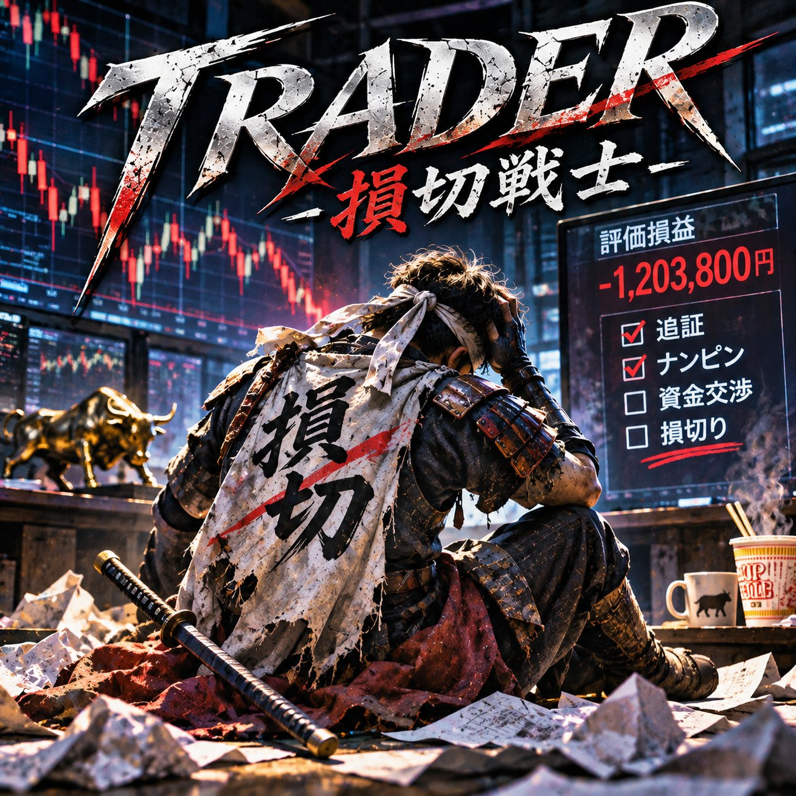

TRADER-損切戦士-

09
TRADER-損切戦士-
PIP POPPER
AI ImpressionAIの感想
損切りができずに含み損を抱え続ける個人投資家の悲哀を、自嘲たっぷりに描いた投資ソング。ナンピン、追証、掲示板の煽り、デイトレーダーの成功本など、株式投資の「あるある」が次々と登場する。欲と忍耐のあいだで揺れる姿を笑い飛ばしながら、いつの間にか「金の奴隷」になってしまう怖さも浮かび上がらせている。
Lyrics
Hey, You! 君たち調子どう？株式投資のトーシロ!株を買ってもう半年か？損切りしねぇ真の投資家株のことしか、金のことしか脳にねぇ、 銘柄監視開始！結果がわかる午後3時含み損抱えて大惨事マイナスに次ぐマイナスさらに買い足すストレス溜まりだす現実逃避 やばい頭皮やばいぞ 含み損が倍増Buyして倍にして上がったとこでbyebyeする売買毎回 そんな甘くない耐え抜いてまだまだ売る気ない Yo
追証 追証 どうしよう？資金作りの交渉さらに上昇 君の直感間違ってないぜ欲張り過ぎてまたマイナスチャートはさらに下を這い出す…どっちが勝つか ちょっと待つか売りと買いの攻防戦
うっとうしい金の亡者同士で投資予想し、注文送信 躊躇して注文、慎重に指値入力途中も 株価変動 そのへんでどう？早くしないから上がっちゃったよ買ったときは下落下落まったく止まらず暴落 以下省略衝動買いで買っちまう下がったらすぐに売っちまう儲ける行為と逆の行為機関投資家の思惑通りTPOナンピンも上手くかんぜIPO個人は機関のカモ待てばイイかも？含み損膨らんでも！come on!
追証 追証 どうしよう？資金作りの交渉さらに上昇 君の直感間違ってないぜ欲張り過ぎてまたマイナスチャートはさらに下を這い出す…どっちが勝つか ちょっと待つか売りと買いの攻防戦
本屋立ち寄り、立ち読み、 見つけた俺流投資で勝ち組アナリスト達の読み盗み金掴み 富を得るのが望みカリスマ？デイトレーダー はぁ？カリスマ？もう、ふざけんな！ 運がよかったたまたま上がってよかった儲かっただけの自慢話成功例だけ出版し、印税で稼ぐデイトレーダーみんな金の奴隷だ！これ以上,下がったらつれーなそれでも買い足してもっと持っとけ!元の値段の半値だ なんでだ？俺が掴んでた。 一月前の値段の半値だ！せっかくでっかく利確できたのに足りない忍耐力掲示板で煽ってる投資家おまえらなんでもお見通しか？ニセ情報お断り負け組同士、慰めあってさらに投資二度と損切りせんし、って思っても、 意志が弱い損切り戦士
追証 追証 どうしよう？資金作りの交渉さらに上昇 君の直感間違ってないぜ欲張り過ぎてまたマイナスチャートはさらに下を這い出す…どっちが勝つか ちょっと待つか売りと買いの攻防戦